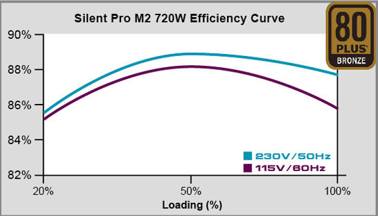

1. Chipset
1.1 Unidad Central de Procesamiento (CPU)
El cerebro del computador que ejecuta instrucciones y procesa datos.
Consideraciones para selección:
- Número de núcleos e hilos
- Frecuencia de reloj
- Cache L2/L3
- Consumo energético (TDP)
- Socket compatible
| Procesador | Núcleos | Frecuencia | TDP |
|---|---|---|---|
| Intel Core i9-13900K | 24 (8P+16E) | Hasta 5.8 GHz | 125W |
| AMD Ryzen 9 7950X | 16 | Hasta 5.7 GHz | 170W |
1.2 Controlador del Bus
Gestiona la comunicación entre los componentes del sistema.
- Velocidad del bus del sistema
- Compatibilidad con estándares (PCIe, USB, SATA)
- Ancho de banda disponible
- Arbitraje de acceso
1.3 Puertas de Entrada/Salida (E/S)
Interfaces para conectar dispositivos externos.
| Tipo | Versión | Velocidad |
|---|---|---|
| USB | 3.2 Gen 2x2 | 20 Gbps |
| Thunderbolt | 4 | 40 Gbps |
| Ethernet | 2.5GbE | 2.5 Gbps |
1.4 Controlador de Interrupciones
Gestiona las señales de interrupción de los dispositivos.
- Priorización de interrupciones
- Manejo de múltiples fuentes
- Compatibilidad con APIC
1.5 Controlador de Acceso Directo a Memoria (DMA)
Permite transferencias directas entre dispositivos y memoria.
Ventajas:
- Reduce carga de la CPU
- Mayor velocidad en transferencias
- Eficiencia energética
1.6 Circuitos de Temporización
Generan y sincronizan las señales de reloj del sistema.
- Precisión en nanosegundos
- Estabilidad de frecuencia
- Múltiples dominios de reloj
1.7 Circuitos de Control
Coordinan las operaciones del sistema.
| Función | Descripción |
|---|---|
| Power Management | Control de estados de energía |
| Thermal Control | Monitoreo y regulación de temperatura |
| Reset Control | Secuencias de inicio y reinicio |
1.8 Controladores de Video
Gestionan la salida gráfica del sistema.
Integrados
- Intel UHD Graphics
- AMD Radeon Graphics
- Bajo consumo
Dedicados
- NVIDIA RTX
- AMD Radeon RX
- Alto rendimiento
2. Aplicaciones
2.1 Entrada/Salida

| Dispositivo | Interfaz | Velocidad | Uso típico |
|---|---|---|---|
| Teclado | USB/PS2 | 1.5 Mbps | Entrada básica |
| Ratón | USB/Wireless | 1.5-12 Mbps | Entrada de precisión |
| Disco Duro | SATA/NVMe | 6 Gbps - 7 GB/s | Almacenamiento |
| Red | Ethernet/WiFi | 1-100 Gbps | Comunicaciones |
2.2 Almacenamiento
SSD NVMe
- Hasta 7,000 MB/s
- Baja latencia
- Factor M.2
- Precio por GB más alto
SSD SATA
- Hasta 550 MB/s
- Compatibilidad universal
- Factor 2.5"
- Precio intermedio
HDD
- Hasta 200 MB/s
- Alta capacidad
- Factor 3.5"/2.5"
- Precio por GB más bajo
Criterios de selección:
- Rendimiento: IOPS y throughput
- Capacidad: GB/TB requeridos
- Durabilidad: TBW (Terabytes Written)
- Conectividad: SATA vs NVMe
- Presupuesto: Costo por GB
2.3 Fuentes de Alimentación

Figura 2.2: Curvas de eficiencia típicas en fuentes de alimentación
| Certificación | Eficiencia | Recomendación |
|---|---|---|
| 80 Plus White | 80% @ 20/50/100% | Básico |
| 80 Plus Bronze | 82/85/82% | Económico |
| 80 Plus Gold | 87/90/87% | Recomendado |
| 80 Plus Platinum | 90/92/89% | Alto rendimiento |
| 80 Plus Titanium | 92/94/90% | Élite |
Fórmula para calcular potencia necesaria:
Potencia Total = (CPU TDP + GPU TDP) × 1.5 + 100W (otros componentes)
Ejemplo: Para un Ryzen 7 5800X (105W) + RTX 3070 (220W): (105+220)×1.5 + 100 = 587.5W → Recomendado 650W
3. Ambientes de servicio
3.1 Negocios
Oficinas
- Equipos todo-en-uno
- Almacenamiento en red
- Seguridad de datos
- Software corporativo
Portátiles empresariales
- Durabilidad (MIL-STD)
- Batería de larga duración
- Protección de datos
- Servicio técnico garantizado
Recomendaciones para negocios:
- Priorizar confiabilidad sobre rendimiento
- Seleccionar equipos con soporte extendido
- Considerar soluciones de virtualización
- Invertir en backup y recuperación de desastres
3.2 Industria
Control industrial
- Computadores industriales
- Resistencia a temperaturas extremas
- Protección contra vibraciones
- Interfaces industriales (RS-485, CAN)
Automatización
- PLC y controladores
- Tiempo real determinístico
- Comunicaciones industriales
- Redundancia crítica
| Característica | Oficina | Industrial |
|---|---|---|
| Temperatura operativa | 10-35°C | -40 a 70°C |
| Protección contra polvo | Básica | IP65 o superior |
| Vibraciones | No diseñado | 5-2000 Hz, 5G |
| Ciclo de vida | 3-5 años | 10+ años |
3.3 Comercio Electrónico
Infraestructura backend
- Servidores escalables
- Balanceadores de carga
- Bases de datos distribuidas
- Almacenamiento de alto IOPS
Plataformas e-commerce
- Hosting especializado
- CDN para contenido estático
- Protección DDoS
- Autoescalado
Requisitos clave para e-commerce:
- Disponibilidad: 99.99% uptime o superior
- Seguridad: Certificados SSL, PCI DSS
- Rendimiento: Tiempos de respuesta <500ms
- Escalabilidad: Picos de tráfico (Black Friday)
- Respaldo: Backup frecuentes y redundantes